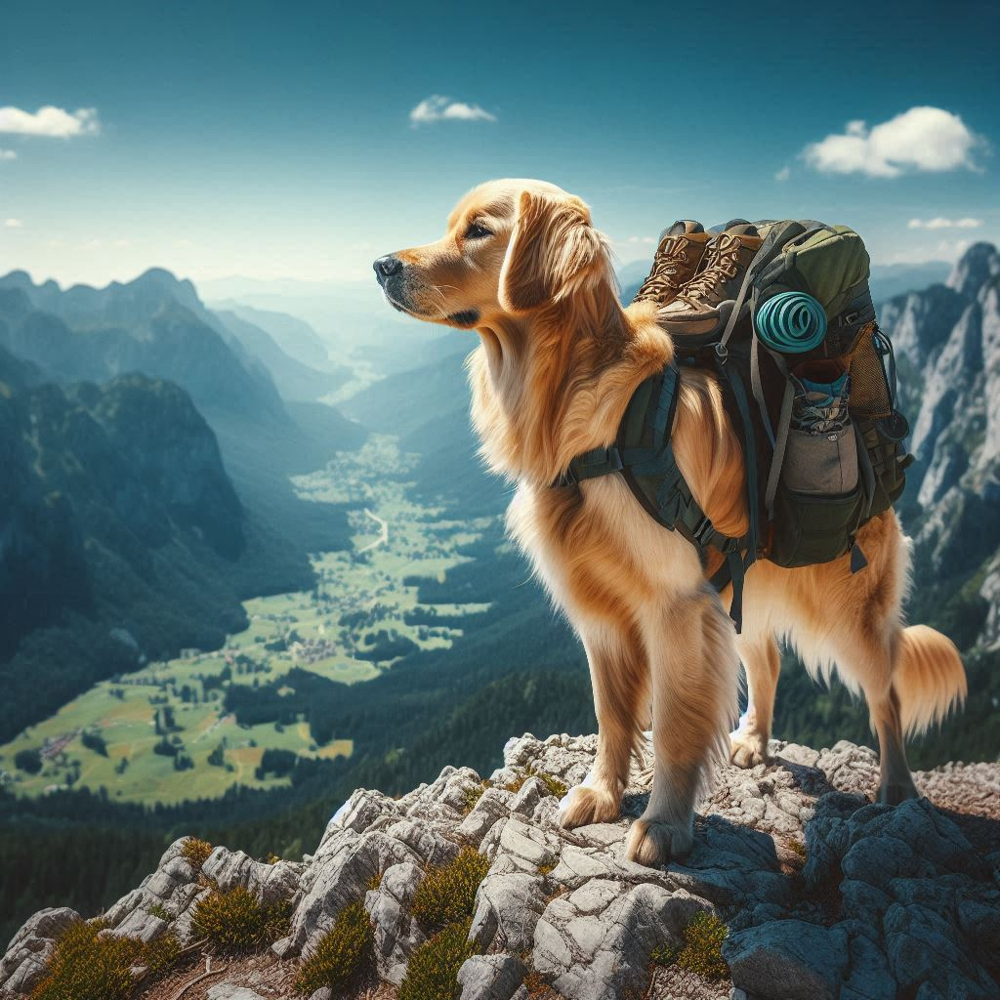

Campanhas Publicitárias 📸
Paçoca não é apenas um cachorro estiloso, ele é uma verdadeira estrela quando o assunto é publicidade! Aqui, você vai encontrar todas as campanhas incríveis que ele já fez e também pode saber como colaborar conosco em futuras ações publicitárias.
Campanhas Recentes:
-
Aventura ao ar livre: Paçoca e sua família participaram de um vídeo publicitário para a marca Adidas, mostrando como os produtos de aventura para pets tornam os passeios ao ar livre ainda mais divertidos e confortáveis.

-
Explore o inexplorado com Paçoca: Junte-se ao Paçoca em uma aventura subaquática cheia de descobertas e maravilhas! Nosso destemido mergulhador peludo está pronto para explorar o inexplorado, e você também pode.
-
Conquiste alturas com Paçoca: Desafie seus limites e conquiste novas alturas ao lado de Paçoca! Nosso corajoso aventureiro de quatro patas mostra que a vida é cheia de aventuras incríveis esperando para serem vividas.
Como trabalhar com o paçoca:
- Envie sua proposta: Entre em contato conosco, acessando este link.
- Defina os objetiso da campanha: Fale sobre os produtos, a mensagem e a forma como você gostaria que Paçoca participasse (fotografia, vídeos, aparições em eventos, etc.).
- Negocie os termos: A partir de sua proposta, discutiremos a melhor forma de trabalhar juntos, definindo valores, prazos e conteúdo.
- Seja parte do #TeamPaçoca: Uma vez que tudo estiver alinhado, você se tornará oficialmente parte do time de marcas parceiras do Paçoca!
Siga o Paçoca nas redes sociais e nunca perca uma foto ou novidade!
Todos os direitos Reservados ©
.png)